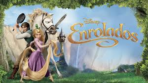
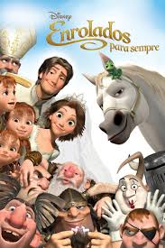

Sinopse
O bandido mais procurado do reino, Flynn Rider, se esconde em uma torre e acaba prisioneiro de Rapunzel, residente de longa data do local. Dona de cabelos dourados e mágicos com 21 metros de comprimento, ela está trancada há anos e deseja desesperadamente a liberdade. A adolescente determinada faz um acordo com o rapaz, e, juntos, partem para uma aventura emocionante.

Originalmente o filme se chamaria Rapunzel, mas teve o título mudado para Tangled para soar neutro aos gêneros.[5] É o filme de animação mais caro da história, com um orçamento de 260 milhões de dólares e o quinto filme mais caro de todos os tempos.
.jpeg)
Após anos sem continuação, fizeram um curta-metragem de animação americano de seis minutos. O cavalo Maximus devia trazer numa almofada os anéis nupciais. O camaleão, Pascal, montado em sua cabeça, jogava pétalas. Com isso Maximus espirra e as alianças são jogadas para longe e vão cair na rua. Em desespero de causa, cavalo e camaleão correm pela cidade atrás dos anéis, e tentando pegá-los causam um verdadeiro banzé inimaginável.
